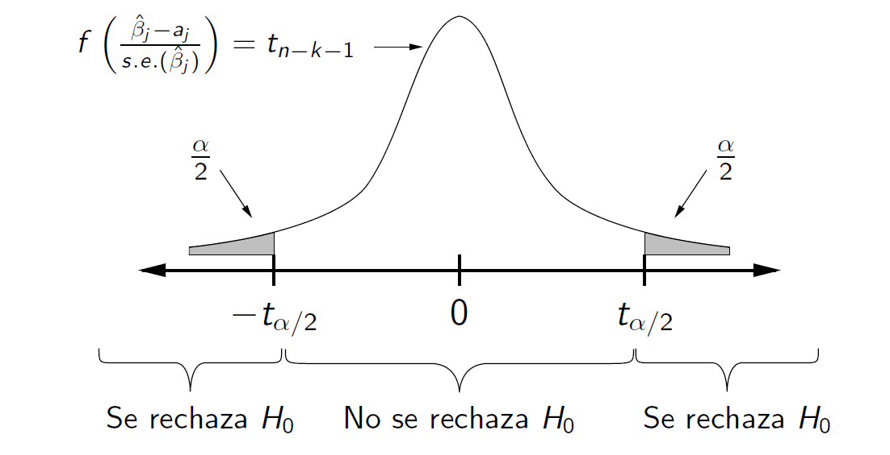
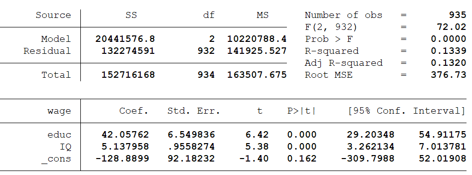
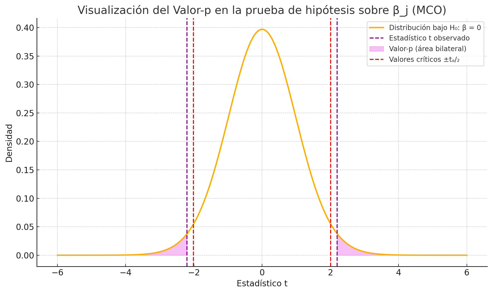
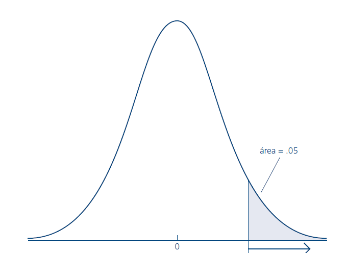
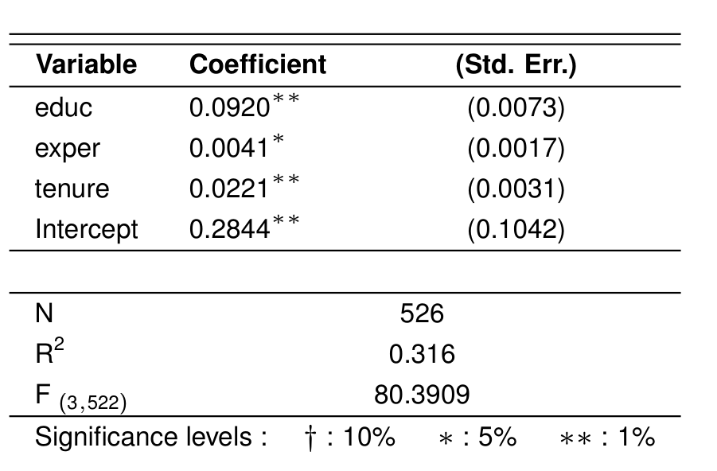

Clase 7 · Inferencia sobre un parámetro
Contenido oficial de la semana
Esta página reproduce íntegras y en orden las diapositivas de la cátedra del viernes de la
semana 7 (sem7/Clase8.tex, 21 láminas). Los bloques Interactivo, los casos y las preguntas
son material adicional para estudiar.
Cómo estudiar esta página
La clase está ordenada en 6 temas. Cada tema parte con una pregunta guía, sigue con las láminas y los simuladores, y termina con ✍️ preguntas de selección múltiple (cada alternativa incorrecta explica por qué no lo es) y un 🧪 ejercicio de R que puedes editar y ejecutar aquí mismo, sin instalar nada. Los 6 ejercicios de R en un solo archivo: 📥 clase7.R.
🎯 Objetivos de la sesión
- Enunciar el teorema de Gauss-Markov y el supuesto de normalidad del modelo lineal clásico.
- Usar la distribución \(t_{n-k-1}\) de \((\hat{\beta}_j - \beta_j)/se(\hat{\beta}_j)\) para hacer tests de hipótesis sobre un parámetro.
- Distinguir los errores tipo I y II, y construir intervalos de confianza para \(\beta_j\).
- Calcular e interpretar el valor-p, y hacer tests de una cola.
🗓️ Agenda de la cátedra (viernes 18:40 – 21:25)
Haz clic en un tema para ir directo a él.
- 18:401Gauss-Markov, normalidad y la distribución de β̂láminas 1–5 · ✍️ 2 preguntas · 🧪 R
- 19:102Tests de hipótesis y los dos tipos de errorláminas 6–9 · ✍️ 2 preguntas · 🧪 R
- 19:353La regla de rechazo y los intervalos de confianzaláminas 10–12 · ✍️ 2 preguntas · 🧪 R
- 19:55☕ Receso
- 20:054Ejemplo: educación e IQláminas 13–15 · ✍️ 2 preguntas · 🧪 R
- 20:305El valor-pláminas 16–17 · ✍️ 2 preguntas · 🧪 R
- 20:506Tests de una cola y conclusionesláminas 18–21 · ✍️ 2 preguntas · 🧪 R
- 21:15✅ Ideas clave, autoevaluación y cierre
Inferencia sobre un parámetro
📄 Diapositivas: sem7/Clase8.tex · 21 láminas
Gauss-Markov, normalidad y la distribución de β̂
Para hacer tests no basta con la media y la varianza de β̂. ¿Qué más necesitamos?
Teorema de Gauss-Markov
-
Teorema: Bajo los supuestos 1 a 5, el estimador de Mínimos Cuadrados Ordinarios (MCO) de \(\beta\) es de mínima varianza entre los estimadores lineales insesgados de \(\beta\).
-
El estimador MCO es el estimador lineal insesgado de menor varianza (MELI / BLUE).
Supuesto 6: Normalidad de \(u\)
-
Las perturbaciones \(u\) se distribuyen como \(u \sim N(0, \sigma^2)\).
-
Este supuesto es importante porque para realizar inferencia acerca de los \(\beta\) y la construcción de intervalos de confianza se necesita la distribución de sus estimadores \(\hat{\beta}\) (no basta con conocer su esperanza y varianza).
Normalidad
-
Como u es la suma de muchos factores distintos no observados que afectan a y, se puede apelar al teorema del límite central (TLC) para concluir que u tiene una distribución aproximadamente normal.
-
Se asume que todos los factores no observados afectan a y por separado en forma aditiva. Si u es una función no aditiva de los factores no observados, entonces el argumento del TLC no puede emplearse.
Supuestos del modelo lineal clásico (MLC)
-
Consisten en todos los supuestos de Gauss-Markov más el supuesto del error distribuido normalmente.
-
Si se satisfacen los supuestos del MCL los estimadores de MCO son insesgados de varianza mínima, no es ya necesario restringir la comparación a estimadores lineales en y.
Distribución del estimador de MCO
-
Teorema: bajo los supuestos 1 a 6 se cumple \(\hat{\beta}_j|X \sim N(\beta_j, \text{Var}(\hat{\beta}_j|X))\).
-
Esto implica que, condicional en las variables regresoras \(X\),
\[ \frac{\hat{\beta}_j - \beta_j}{\sqrt{\text{Var}(\hat{\beta}_j|X)}} \sim N(0, 1). \] -
Pero, recuerden que no conocemos \(\text{Var}(\hat{\beta}_j)\) porque no conocemos \(\sigma^2\).
-
En su lugar, vamos a usar la estimación: \(\hat{\text{Var}}(\hat{\beta}_j)\).
-
Nos queda que:
\[ \color{red}t_{\hat{\beta_j}}=\frac{\hat{\beta}_j - \beta_j}{\text{s.e.}(\hat{\beta}_j)} \sim t_{n-k-1} \]donde \(\text{s.e.}(\hat{\beta}_j) = \sqrt{\hat{\text{Var}}(\hat{\beta}_j|X)}\).
-
El término en rojo va a ser clave para hacer inferencia y construir intervalos de confianza.
✍️ Practica · Tema 1
¿Por qué se agrega el supuesto 6, u ~ N(0, σ²)?
✅ Lámina 2: no basta con la esperanza y la varianza.
¿Por qué el estadístico usa la t de Student y no la normal?
✅ Lámina 5: con s.e.(β̂ⱼ) en vez de la desviación verdadera, se obtiene t con n − k − 1 gl.
🧪 Practica en R · ¿De dónde sale la t?
Simula 10 000 estadísticos (β̂ − β)/s.e. con n = 15 y compáralos con la t de 13 gl y con la normal.
set.seed(1)
n <- 15
t_stats <- replicate(10000, {
x <- rnorm(n)
y <- 1 + 0.5 * x + rnorm(n)
s <- coef(summary(lm(y ~ x)))
(s["x", "Estimate"] - 0.5) / s["x", "Std. Error"] # (β̂ − β) / s.e.
})
hist(t_stats, breaks = 60, freq = FALSE, xlim = c(-5, 5),
main = "t simulados (barras) y t con 13 gl (rojo)")
curve(dt(x, df = n - 2), add = TRUE, lwd = 3, col = "firebrick")
curve(dnorm(x), add = TRUE, lwd = 2, lty = 2)
c(t_13gl = qt(0.975, 13), normal = qnorm(0.975), t_932gl = qt(0.975, 932))
🎯 Reto: cambia n <- 15 por n <- 200. ¿Cuánto se parecen ahora la t y la normal?
Tests de hipótesis y los dos tipos de error
Si decidimos con datos, ¿de qué formas nos podemos equivocar?
Test de hipótesis sobre un parámetro individual
-
Tenemos el modelo poblacional
\[ Y_i = \beta_0 + \beta_1X_{i1} + \ldots + \beta_kX_{ik} + u_i \] -
Hasta aquí, aprendimos a encontrar el estimador \(\hat{\beta}\) de los \(\beta\).
-
Además, aprendimos a estimar su varianza y su función de distribución.
-
Ahora queremos usar todo esto para testear hipótesis acerca del valor de \(\beta\).
-
Suponga que quiere testear si el coeficiente \(\beta_j\) que acompaña a \(x_j\) es significativamente distinto al valor \(a_j\). Donde \(a_j\) es una constante (un número). Es decir:
$$ \begin{aligned} H_0 &: \beta_j = a_j \ H_1 &: \beta_j \neq a_j
\end{aligned} $$
-
Para el caso particular de \(a_j = 0\), el test busca determinar si la variable \(x_j\) es significativa o relevante para el modelo.
Si se rechaza \(H_0\), entonces \(x_j\) es estadísticamente significativa.
-
Para el test se usa el siguiente estadístico \(t\) construido bajo la hipótesis nula:
\[ t_{\hat{\beta}_j} = \frac{\hat{\beta}_j - a_j}{s.e.(\hat{\beta}_j)} \sim t_{n-k-1} \] -
\(t_{\hat{\beta}_j}\) mide en cuántas desviaciones estándar estimadas de \(\hat{\beta}_j\), se aleja \(\hat{\beta}_j\) de \(a_j\). Valores de \(t_{\hat{\beta}_j}\) alejados de \(a_j\) son evidencia en contra de la hipótesis nula.
Error tipo I y Error tipo II
| Realidad | Decisión | Resultado | Tipo de error |
|---|---|---|---|
| \(H_0\) verdadera | No se rechaza \(H_0\) | Decisión correcta | -- |
| \(H_0\) verdadera | Se rechaza \(H_0\) | Decisión incorrecta | Error tipo I (\(\alpha\)) |
| \(H_0\) falsa | No se rechaza \(H_0\) | Decisión incorrecta | Error tipo II (\(\beta\)) |
| \(H_0\) falsa | Se rechaza \(H_0\) | Decisión correcta | -- |
Errores tipo I y II
| Característica | Error Tipo I | Error Tipo II |
|---|---|---|
| Definición | Rechazar \(H_0\) cuando en realidad es verdadera. | No rechazar \(H_0\) cuando en realidad es falsa. |
| Probabilidad | \(\alpha = P(\text{rechazar } H_0 \mid H_0 \text{ verdadera})\) | \(\beta = P(\text{no rechazar } H_0 \mid H_0 \text{ falsa})\) |
| Control | \(\alpha\) se fija de antemano: es el nivel de significancia. | \(\beta\) disminuye al aumentar \(n\). El poder del test es \(1-\beta\). |
| Consecuencia | Concluir efectos inexistentes. | No detectar un efecto real. |
✍️ Practica · Tema 2
Rechazas H₀: β₁ = 0 cuando en realidad β₁ = 0. ¿Qué error cometiste?
✅ Su probabilidad es α, el nivel de significancia (lámina 9).
¿Qué pasa con la probabilidad de error tipo II si aumenta n?
✅ Lámina 9: el poder del test es 1 − β. Pruébalo en el simulador.
🧪 Practica en R · Error tipo I y poder por simulación
Repite 2 000 veces un test con H₀ verdadera y con H₀ falsa, y cuenta cuántas veces se rechaza.
set.seed(2)
rechaza <- function(beta1, n = 30, alpha = 0.05) {
x <- rnorm(n)
y <- 1 + beta1 * x + rnorm(n)
coef(summary(lm(y ~ x)))["x", "Pr(>|t|)"] < alpha
}
c(error_tipo_I = mean(replicate(2000, rechaza(0))), # ≈ α
poder_beta_0.3 = mean(replicate(2000, rechaza(0.3))),
poder_con_n_120 = mean(replicate(2000, rechaza(0.3, n = 120))))
🎯 Reto: cambia alpha = 0.05 por alpha = 0.01. ¿Qué pasa con el error tipo I? ¿Y con el poder?
La regla de rechazo y los intervalos de confianza
¿Qué tan lejos de aⱼ tiene que estar β̂ⱼ para rechazar?
Test de hipótesis sobre un parámetro individual
-
Supongamos que se fija la probabilidad de cometer error tipo I en \(\alpha\). Nivel de significancia o probabilidad de rechazar \(H_0\) cuando en realidad es verdadera.
-
Sea \(t_{\alpha/2}\) el percentil \((1 - \frac{\alpha}{2})100\) de la distribución t-Student de \(n - k - 1\) grados de libertad.
-
Si \(\left|\frac{\hat{\beta}_j - a_j}{s.e.(\hat{\beta}_j)}\right| \geq t_{\alpha/2}\), se rechaza \(H_0\).

-
El anterior corresponde a un test de dos colas.
-
Un nivel de significancia del \(5\%\) es el valor más común.
-
Esto significa que de todas las muestras aleatorias que se pueden tomar, en un \(5\%\) de ellas se rechaza equivocadamente la hipótesis nula.
-
Si se rechaza \(H_0\) a un nivel de significancia de \(\alpha\), entonces también se rechaza para niveles de significancia más altos. Por ejemplo, si una variable es significativa al \(1\%\), entonces también lo es al \(5\%\), al \(10\%\), \(20\%\), etc.
-
Recuerde que \(t_n \rightarrow N(0, 1)\) cuando \(n \rightarrow \infty\).
Intervalos de Confianza para un Parámetro Individual
-
El intervalo de confianza al \((1-\alpha)100\%\) para \(\beta_j\) es:
\[ \hat{\beta}_j - t_{\alpha/2} \text{s.e.}(\hat{\beta}_j) \leq \beta_j \leq \hat{\beta}_j + t_{\alpha/2} \text{s.e.}(\hat{\beta}_j) \] -
Esto nos indica que con un \((1 - \alpha)100\%\) de confianza, \(\beta_j\) estará dentro de ese intervalo.
-
Si \(\beta_j\) no está en el intervalo, entonces se rechaza la hipótesis nula al \((\alpha 100\%)\) de significancia.
✍️ Practica · Tema 3
Una variable es significativa al 1%. ¿Lo es también al 5%?
✅ Lámina 11.
El IC de 95% para β₁ es (0.12; 0.48). ¿Qué concluyes sobre H₀: β₁ = 0 al 5%?
✅ Intervalo y test de dos colas al mismo α dan la misma conclusión.
🧪 Practica en R · El intervalo y el test dicen lo mismo
Calcula el IC de 95% para β₁ a mano y con confint(), y comprueba la regla de rechazo.
set.seed(7)
n <- 60
x <- rnorm(n)
y <- 2 + 0.4 * x + rnorm(n)
m <- lm(y ~ x)
b <- coef(summary(m))["x", "Estimate"]
se <- coef(summary(m))["x", "Std. Error"]
t_crit <- qt(0.975, df = n - 2)
c(b - t_crit * se, b + t_crit * se) # IC 95% a mano (lámina 12)
confint(m)["x", ] # lo mismo con R
abs(b / se) > t_crit # ¿se rechaza H0: β1 = 0? (lámina 10)
🎯 Reto: cambia 0.4 * x por 0.1 * x. ¿Contiene ahora el intervalo al cero? ¿Qué dice el test?
Ejemplo: educación e IQ
Después de controlar por IQ, ¿sigue importando la educación para el salario?
Ejemplo: Datos
Consideremos el modelo de regresión lineal:
donde queremos evaluar la hipótesis de que, después de tener en cuenta el IQ, la educación no tiene efecto en el salario.

Número de observaciones=935
Ejemplo de Test de Hipótesis
-
Paso 1: Planteamos las hipótesis:
\[ H_0 : \beta_1 = 0 \quad \text{vs} \quad H_1 : \beta_1 \neq 0 \] -
Paso 2: Calculamos el estadístico t:
\[ t_{\hat{\beta}_1} = \frac{42.0576 - 0}{6.5498} = 6.4212 \] -
Paso 3: Regla \(\Rightarrow\) rechazamos \(H_0\) si \(|6.42| > t_{2.5}\), con gl=932.
-
Paso 4: Dado que \(|6.42| \geq 1.96\), rechazamos \(H_0\). Con un nivel de significatividad del \(5\%\), concluimos que \(\beta_1\) es significativamente diferente de cero.
Ejemplo
-
Tomemos \(\alpha 100 = 5\% \rightarrow t_{\alpha/2} = 1.96\)
-
Recordando la fórmula:
\[ \hat{\beta}_1 - t_{\alpha/2} \text{s.e.}(\hat{\beta}_1) < \beta_1 < \hat{\beta}_1 + t_{\alpha/2} \text{s.e.}(\hat{\beta}_1) \] -
Reemplazando:
\[ 42.0576 - 1.96 \times 6.5498 < \beta_1 < 42.0576 + 1.96 \times 6.5498 \] -
Entonces:
\[ 29.22 < \beta_1 < 54.895 \] -
Esto significa que con 95% de confianza, \(\beta_1\) está entre esos valores.
✍️ Practica · Tema 4
En la lámina 14, t = 42.0576 / 6.5498 = 6.42. ¿Qué mide ese número?
✅ Lámina 7: t mide la distancia en desviaciones estándar estimadas.
El IC de 95% de la lámina 15 es (29.22; 54.895). ¿Qué afirmación es correcta?
✅ Y como el 0 no está en el intervalo, se rechaza H₀: β₁ = 0.
🧪 Practica en R · El ejemplo de las láminas 13 a 15
Con los números de la salida de Stata, calcula el estadístico t, el valor crítico y el intervalo de confianza. Con el valor crítico exacto (1.9625) el intervalo coincide con el de Stata, de 29.20 a 54.91; la lámina 15 usa 1.96 y obtiene 29.22 a 54.895.
# Lámina 13: salario en educación e IQ (n = 935, gl = 932)
b <- 42.0576
se <- 6.5498
gl <- 932
t <- (b - 0) / se
t # 6.42 (lámina 14)
qt(0.975, gl) # valor crítico ≈ 1.96
b + c(-1, 1) * qt(0.975, gl) * se # IC 95% (lámina 15)
🎯 Reto: testea H₀: β₁ = 50 en vez de 0. ¿Se rechaza al 5%?
El valor-p
¿Cuál es el nivel de significancia más pequeño al que habríamos rechazado?
Valor-p (p-value)
¿Cuál es el menor nivel de significancia al que se habría rechazado la hipótesis nula?
Este nivel se conoce como el valor-p de la prueba.
El valor-p es la probabilidad de observar un estadístico t tan extremo como el que se encontró si la hipótesis nula es verdadera.
Esto significa que valores-p pequeños son evidencia contra la hipótesis nula.
Valor-p

✍️ Practica · Tema 5
Un coeficiente tiene valor-p = 0.03. ¿Qué concluyes?
✅ Lámina 16: el valor-p es el menor nivel de significancia al que se rechaza.
En el gráfico de la lámina 17, ¿qué representa el área rosada?
✅ Es el valor-p bilateral.
🧪 Practica en R · Calcular valores-p
Obtén el valor-p del ejemplo y el de varios estadísticos t con pt().
gl <- 932
2 * pt(-abs(6.4212), gl) # valor-p del ejemplo: casi 0
# Valor-p de dos colas para distintos estadísticos t
t <- c(1, 1.96, 2.2, 3)
round(2 * pt(-abs(t), gl), 4)
🎯 Reto: ¿qué valor de t da un valor-p de exactamente 0.05 con 932 gl? Usa qt().
Tests de una cola y conclusiones
¿Y si solo nos interesa saber si el efecto es positivo?
Tests de una cola
-
Estos tests consideran hipótesis del tipo:
-
\(H_0 : \beta_j = a_j\)
-
\(H_1 : \beta_j > a_j\)
-
-
Valores negativos del estadístico \(t _{\hat{\beta}_j}\) no representan evidencia en contra de la hipótesis nula.

Ejemplo: ecuación de salarios
Consideremos el modelo
donde educ son años de educación, exper son años de experiencia y tenure son años de permanencia en la firma.

Se busca testear si hay retornos positivos a la experiencia.
-
Paso 1: \(H_0: \beta_2 =0\), \(H_1: \beta_2 > 0\)
-
Paso 2: El estadístico \(t\) es \(t_{\hat{\beta}_2} = \frac{0.0041}{0.0017} \approx 2.41\)
-
Paso 3: Comparar \(t_{\hat{\beta}_2}\) contra \(t_{0.05}\). En este caso hay \(n - k - 1 = 522\) gl, por lo que podemos usar valores de la normal. El valor crítico a un nivel de significancia del 5% es 1.645.
-
Paso 4: Por lo tanto, \(2.41 > 1.645\) y se concluye que \(\beta_2\) es estadísticamente mayor que 0 con un nivel de significancia del 5%.
Conclusiones
-
Hemos visto cómo se puede hacer tests de hipótesis simples sobre estimadores del MCO.
-
El test más importante es determinar si el parámetro es significativamente diferente de cero.
✍️ Practica · Tema 6
En H₀: β₂ = 0 vs. H₁: β₂ > 0, obtienes t = −3. ¿Qué concluyes?
✅ Lámina 18.
Con 522 gl y α = 5%, ¿qué valor crítico se usa en el test de una cola de la lámina 20?
✅ Con tantos grados de libertad se puede usar la normal.
🧪 Practica en R · Una cola contra dos colas
Reproduce el test de la lámina 20 y compara el valor-p de una y de dos colas.
# Lámina 20: retornos a la experiencia (n − k − 1 = 522)
t <- 0.0041 / 0.0017
t # ≈ 2.41
qt(0.95, 522) # valor crítico de una cola ≈ 1.645
pt(t, 522, lower.tail = FALSE) # valor-p de una cola
2 * pt(-abs(t), 522) # el de dos colas, para comparar
🎯 Reto: si el estadístico fuera 1.8, ¿se rechazaría con una cola? ¿Y con dos?
🧠 Ideas clave
- Con los supuestos 1 a 6 (modelo lineal clásico), \(\dfrac{\hat{\beta}_j - \beta_j}{se(\hat{\beta}_j)} \sim t_{n-k-1}\).
- Se rechaza \(H_0: \beta_j = a_j\) si \(|t| \geq t_{\alpha/2}\); \(\alpha\) es la probabilidad de error tipo I, y el poder \(1 - \beta\) sube con \(n\).
- El IC al \((1-\alpha)\) es \(\hat{\beta}_j \pm t_{\alpha/2}\, se(\hat{\beta}_j)\): si \(a_j\) queda fuera, se rechaza \(H_0\).
- El valor-p es el menor nivel de significancia al que se rechaza. En una cola, solo cuentan los valores de \(t\) en la dirección de \(H_1\).
✅ Autoevaluación
β̂ⱼ = 1.2, s.e. = 0.5, n − k − 1 = 100. ¿Se rechaza H₀: βⱼ = 0 al 5% (dos colas)?
✅ Pruébalo en la calculadora del test t.
Bajas α de 5% a 1%. ¿Qué pasa?
✅ Míralo en el simulador de errores tipo I y II.
Un coeficiente no es estadísticamente significativo. ¿Qué significa?
✅ Ausencia de evidencia no es evidencia de ausencia.
📚 Para la próxima clase
- Wooldridge, capítulo 4, secciones 4.1 a 4.3 (distribución de los estimadores, test t e intervalos de confianza).
- Próxima clase: Inferencia sobre un conjunto de parámetros.